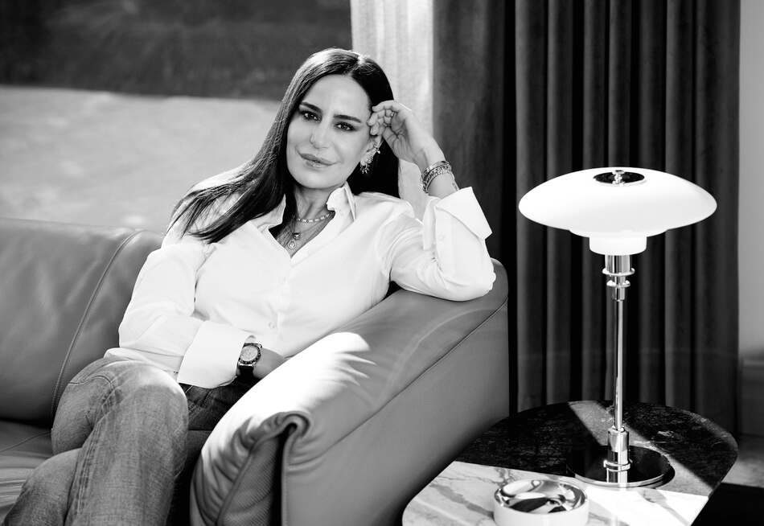

Melis Hanım, sitenizde biyografinizi okudum ama siz de okurlarımız için kısaca kendinizi tanıtır mısınız, kendi cümlelerinizle…
Ben, yapay zekâ destekli sinematik, hareketli sanat eserleri, fine art baskılar ve fiziksel üretimler yapan bir karma medya ve yeni medya sanatçısıyım. İzmir'de doğdum; ortaokul ve lise eğitimimi Saint Joseph İzmir'de tamamladım.
Daha sonra Amerika Birleşik Devletleri'nde Towson University'de Uluslararası İlişkiler ve Ekonomi eğitimi aldım. Yakın dönemde ise UC Berkeley Executive Education bünyesinde verilen yapay zekâ programını tamamladım.
Eğitiminize baktığımızda çok yönlü biri olduğunuzu görüyoruz. Sanata ilginiz ne zaman, nasıl başladı? Akademik bilginizle sanatçı kişiliğiniz nasıl buluştu?
Sanata fiziksel işler üreterek başladım. Yüzeyle, katmanlarla ve derinlikle çalışmak benim için başından beri önemli oldu. Zamanla, bir izleyicinin bir sanat eseriyle ilk karşılaşmasının ve bu anın yarattığı hissin ne kadar önemli olduğunu fark ettim.
2021 yılında aldığım online bir kurs sayesinde, resim yaparken farklı malzemeler ve teknikler kullanarak derinlik vermeyi öğrendim. Bu süreç çok hoşuma gitti ve beni fiziksel, katmanlı işler üretmeye yönlendirdi. Bunun yanında, teknolojiye her zaman ilgim vardı. Zaten adım adım düşünen, süreci önemseyen bir yapım var. Yapay zekânın sanat üretiminde kullanılmaya başladığını gördüğümde, bu alanla daha bilinçli bir şekilde çalışmak istedim ve bu da beni UC Berkeley Executive Education bünyesinde verilen yapay zekâ programına yönlendirdi.
Zamanla, fiziksel işlerimde ele aldığım duyguların hareket içinde nasıl var olabileceği ilgimi çekmeye başladı. Dijital araçlar ve yapay zekâ destekli süreçler, duyguların tek bir anda sabitlenmesi yerine, zaman içinde değişerek ortaya çıkmasına imkân verdi. Bugün yaptığım işler, sezgiyle ilerleyen ama aynı zamanda planlanan ve kurgulanan bir üretim sürecinin sonucu.

Yapay zeka bugün artık her yerde ve çok tartışılıyor. Siz sanatınızı spesifik olarak yapay zeka üzerine kurgulamışsınız. Bunun geleneksel anlamda sanattan nasıl farkı var sizce? Siz yaptığınız sanatı nasıl tanımlıyorsunuz? Ne tür eleştiriler alıyorsunuz mesela? Bu eleştirileri nasıl yanıtlıyorsunuz?
Yapay zekâ bugün çok konuşuluyor ve çoğu zaman tek başına üreten bir araç gibi algılanıyor. Benim için ise yapay zekâ, üretim sürecinde kullandığım araçlardan biri. Ne üretileceğine, hangi görüntülerin seçileceğine ve işin nasıl ilerleyeceğine her zaman ben karar veriyorum.
Bu görüntülerin ortaya çıkması tek bir denemeyle olmuyor; doğru duyguyu yakalayabilmek için saatler süren prompting yapıyor, yönlendirmeleri değiştiriyor ve en doğru görüntüleri seçiyorum. Bu sürecin önemli bir kısmı, "anchor" görüntüleri yaratmakla başlıyor; bu görüntüler daha sonra birbirinden farklı kısa video parçalarına dönüşüyor ve ritim ile akış bu parçalar üzerinden kuruluyor.
Ortaya çıkan eser, bu parçaların seçilmesi, kurgulanması, sıralanması ve sesle birlikte bir araya getirilmesiyle şekilleniyor. Ritim, zamanlama ve atmosfer bu aşamada bilinçli olarak kuruluyor. Aynı zamanda bazı eserlerim, bu hareketli üretim sürecinden alınan tek bir anın dondurulmasıyla oluşan sabit eserler — örneğin Diasec baskılar.
Aldığım eleştirilerin çoğu, yapay zekânın insan emeğini geri plana ittiği yönünde oluyor. Bu bakış açısını anlıyorum; çünkü sanat tarihinde her yeni araç benzer soruları beraberinde getirdi. Bir sanat eserinin arkasında düşünme, seçim yapma ve bilinçli bir kurgu varsa, orada hâlâ insan vardır. İzleyicide bir his uyandıran, durup baktıran ya da düşündüren bir eser, hangi araçla üretilmiş olursa olsun sanatın alanına girer.
“Herkes aynı esere baksa bile, hissettiği duygular farklı oluyor.”
Melis Ragusin
Değişim, dönüşüm kavramları eserlerinizde özellikle öne çıkıyor sanki. Bu konuda neler söylersiniz?
Değişim ve geçicilik, işlerime sonradan eklediğim kavramlar değil; üretirken doğal olarak içinde bulunduğum hâller. Duyguların, anların ve içsel durumların sabit olmadığını düşünüyorum. Bu yüzden işlerim de tek bir noktada durmak yerine, zaman içinde değişen bir yapı taşıyor.
Benim için geçicilik, bir şeyin kaybolmasıyla ilgili değil. Daha çok, içinde bulunduğumuz anı fark etmekle ilgili. Bir duygu, bir bakış ya da bir hâl uzun süre aynı kalmıyor; ama tam da bu yüzden anlamlı oluyor. İşlerimde anlatılmak istenen net bir hikâye ya da başı sonu olan bir anlatı yok.
İzleyicinin, bir eserin karşısında durup kendi duygusuyla temas edebilmesini önemsiyorum. Bazen bu temas çok sakin bir şekilde olur, bazen daha yoğun hissedilir. Ama her durumda, beni asıl ilgilendiren o geçiş — bir hâlin başka bir hâle dönüşmesi. İzleyicinin eserlerle kurduğu bu kişisel ilişki, benim için üretimin en önemli parçası. Çünkü herkes aynı esere baksa bile, hissettiği duygular farklı oluyor.
Birlikte çalıştığınız uluslararası kurumlardan ve bu çalışmalardan biraz söz eder misiniz? Yeni planlarınız, projeleriniz var mı? İzleyici eserlerinizi en kısa sürede nerede, ne zaman görebilir?
Video eserlerim, kürasyonlu bir dijital sanat platformu olan Sedition Art'ta yer alıyor. Sedition, sınırlı edisyonlu dijital ve zamana dayalı sanat eserlerinin ekranlar üzerinden deneyimlenmek üzere sunulduğu uluslararası bir platform. Bu yapı, sinematik ve zamana dayalı üretimlerimin farklı mekânlarda ve evlerde izleyiciyle buluşabilmesi açısından benim için önemli.
Aynı zamanda, Blackdove üzerinden — hem abonelik tabanlı bir dijital yayın hizmeti olarak hem de galeri ve koleksiyon programları aracılığıyla — eserlerim geniş bir dijital izleyici kitlesiyle buluşuyor. Bu sayede, klasik sergi formatlarının dışında da farklı bağlamlarda yer alabiliyorum.
Miami Art Week kapsamında Aqua Art Miami, Red Dot Miami ve Context Art Miami gibi uluslararası sanat fuarlarında yer aldım. Bu süreçte, Red Dot Miami'de sergilenen eserlerim aracılığıyla, ABC'de yayınlanan Shark Tank programıyla tanınan yatırımcı ve girişimci Daymond John ile yollarımız kesişti. Daymond John, aynı zamanda küresel moda markası FUBU (For Us, By Us)'nun kurucusu ve Shark Art platformunun da kurucusu. Bu karşılaşmanın ardından, Shark Art aracılığıyla desteklenen sanatçılar arasında yer aldım.
Şu sıralar, sinematik hareketli eserler, bu eserlerden türeyen sabit çalışmalar ve fiziksel üretimler üzerinde yeni projeler geliştirmeye devam ediyorum. Aynı duygunun, farklı formatlarda ve farklı ölçeklerde nasıl deneyimlendiğiyle ilgileniyorum. Üretim sürecim hâlâ devam ediyor ve eserlerim, hem dijital platformlarda hem de fiziksel bağlamlarda izleyiciyle buluşmayı sürdürüyor.